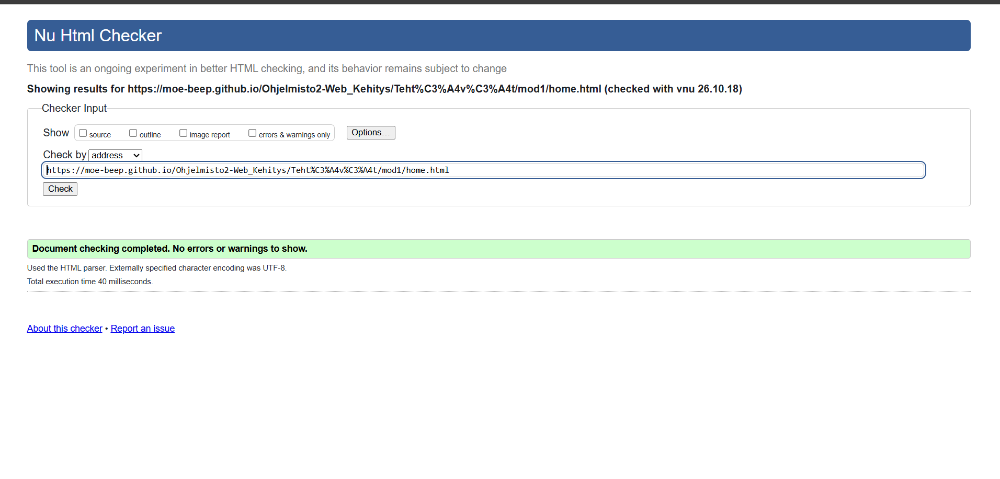
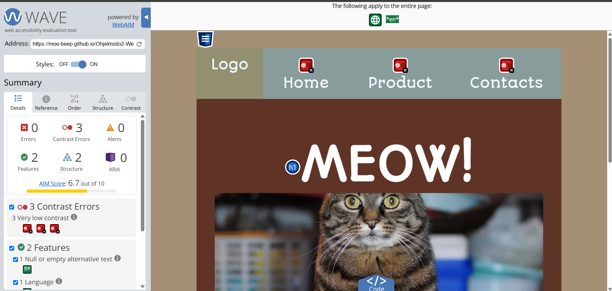

Font is from google fonts Autour one
@font-face {
font-family: Audit;
src: url(Autour_One/AutourOne-Regular.ttf) format(truetype);
}



Even though the website said the contrast is low, I didn't want to change it because it looks nice the way it is